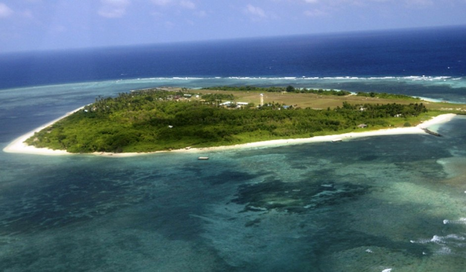
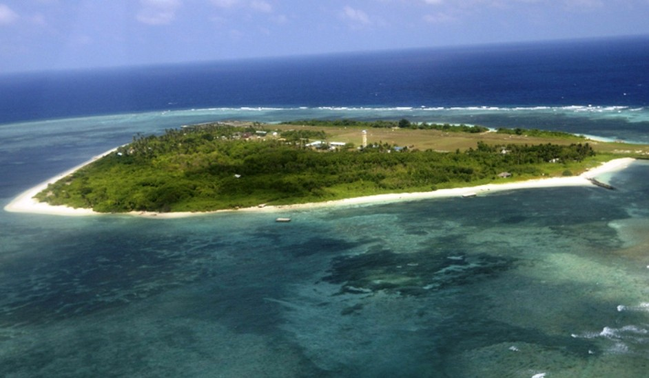

Speakers
Mai Van Hai, University of Lodz, Lodz
Nguyen Viet Thanh, Lodz University of Technology, Lodz
Vo Van Thiep, Pedagogical University of Krakow, Krakow
Viet Ba Mai, Warsaw University of Technology, Warsaw
Tymofiy Sichkar, Warsaw University of Technology, Warsaw
Pham Dinh Quoc Huy, Institute of Physics, Polish Academy of Sciences, Warsaw
Nguyen Truong Co, Institute for Computational Science and Technology, Ho Chi Minh City, Vietnam
Prof. Hoa Kim Ngan Nhu-Tarnawska, Pedagogical University of Cracow (PUC), Krakow
Dr. Dang Ngoc Han, The Le Quy Don Society in Poland, Warsaw
Prof. Nguyen Dinh Chau, AGH University of Science and Technology, Krakow
Duong Van Hao, AGH University of Science and Technology, Krakow
Dr. Giovanni La Penna, CNR, Institute of Chemical Organometall Compounds, Florence, Italy

 
